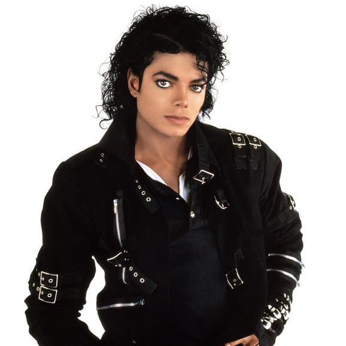

The changes in society affects music. It basically reflects our cultural revolution. When we try to look from the beginning of humanity, our ancestors only mimicked the sound they heard from their surroundings in terms or tones and repetitions. And when we try to compare it to what we have right now in the 21st century, it is vastly different. Over the decades, music changes; it became faster, new instruments were introduced, louder. It is also because of the invention of technology; it greatly affects the production of music.
Louis Armstrong
During the 1920s, music was mostly dominated by jazz but there are other popular genres like blues, broadway, and dance bands. It is also said that it is the mark of modern music since different technological inventions are slowly making its way to the world which also helps with the process of making music. Jazz gained popularity and spread through the country in clubs, speakeasies, and dance halls where jazz bands would play their new music. Until the 1930s and 1940s, jazz continued to spread throughout the world but it was not limited to its traditional 3-piece combo. But during these decades other genres like swing, big band, latin, and country started to dominate the music industry. Popular musicians like Louis Armstrong, Billie Holiday, Duke Ellington, and Roy Rogers to name a few.
Chuck Berry
After the horrible wars that happened to the world during that time, it also affected the music and it was very visible with how it changed. It reflected the beginnings of social changes in the world. It was also the time where racial tensions were high; fighting for civil rights; and it was reflected with the music as well. During the 1950s and 60s, Rock n Roll and R&B (Rhythm and Blues) was popularized by African-American musicians; they rose to prominence but because of racism and segregation, some reaped the benefits of their works. In fact, Chuck Berry was considered as the one who invented Rock n Roll, although not totally the one, but he shaped it with his music. Other known musicians at that time were none other than Elvis Presley, The Beatles, The Rolling Stones, etc. Other rock subgenres also emerged during this time.

Michael Jackson
Disco dominated the music scene in the 70s alongside funk, soul music, R&B, and punk rock. It was a decade where popular artists and songs released; and was known for a decade of great variety. Each genre has popular musicians that we still know today and was part of the amazing popular music and its evolution. Elton John, Jackson 5, Bee Gees, ABBA, Queen, etc. At the end of 70s, hip-hop emerged and continued to gain popularity until it was recognized as part of the genres of music. When the 80s came, it was also the start of Music Television where artists created music videos to gain popularity and success. Pop and Hip-hop music were the dominant genres during this time. Michael Jackson, who was later on named as “King of Pop” was known for his creative music videos and skilled dancing; together with his Thriller album it set a standard for pop music. Other popular pop musicians were Whitney Houston, Prince, and Madonna. For hip-hop they struggled to spread their music just because of their skin color, but with criticisms, MTV then started shoving videos from black artist, Michael Jackson was the first one and gave chance to other black artists as well specifically hip-hop musicians like Run DMC, LL Cool J, and Salt n Peppa.
Beyonce
Throughout the 90s, hip-hop stayed as a prominent genre alongside pop, contemporary R&B, reggae, and rock. It was also a decade dominated by powerful voices like Mariah Carey, Whitney Houston, and Celine Dion. Bands were also popular during that time like Pearl Jam and Nirvana. Bubblegum pop also emerged; popular artists such as Britney Spears and Christina Aguilera. And other contemporary R&B artists, mostly groups, dominated the decade like Backstreet Boys, NSYNC, Destiny’s Child, etc. With the arrival of the 21st century, it was also the start of the rise of Dance-Pop, Pop-Punk, K-Pop, Indie Rock, etc. The Internet also took part in the success of these individuals as the people got more access to their music and discovered artists which is now known around the world. Eminem and Britney Spears were known for their music during the early 2000s together with Beyonce, Usher, Jay-Z, Kanye West, and many more. During the 2010s up until today, numerous artists also released their hit tracks like Taylor Swift, Justin Bieber, Ariana Grande, etc. The world also opened up with K-pop as it is now one of the most popular genres.